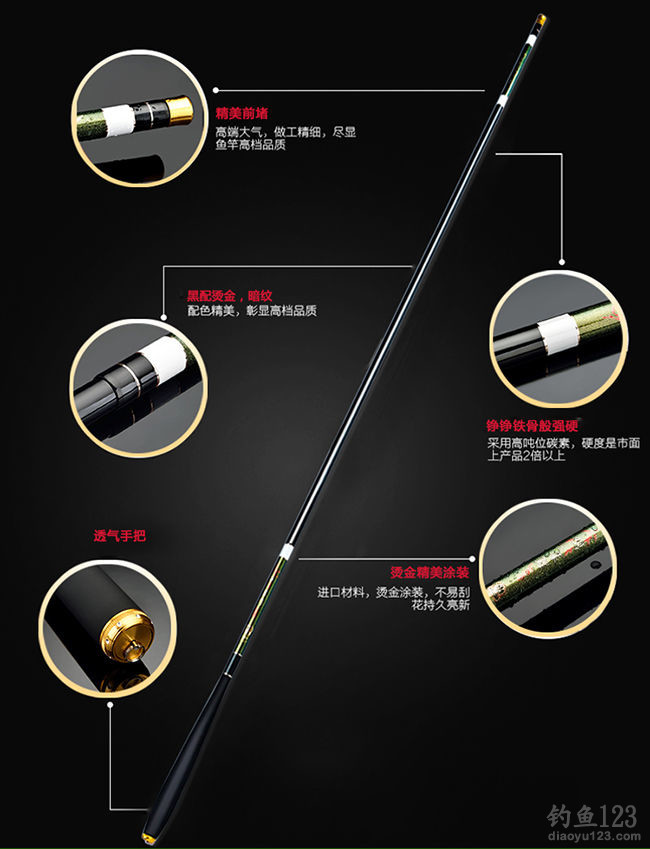
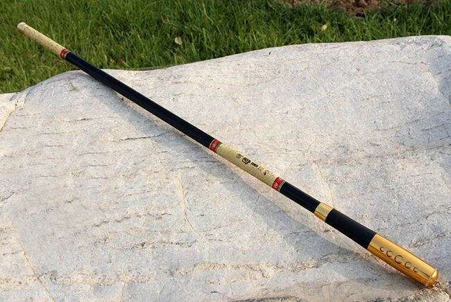
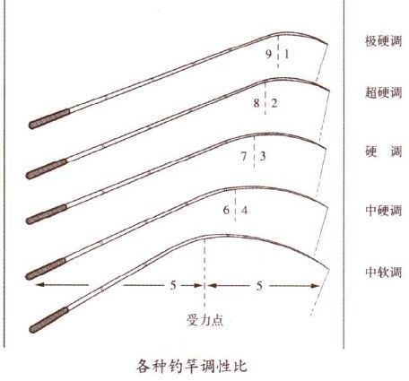
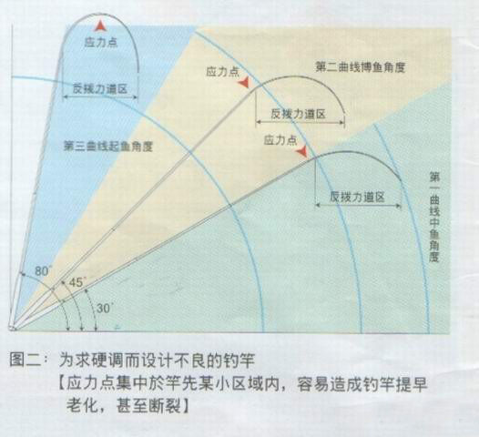
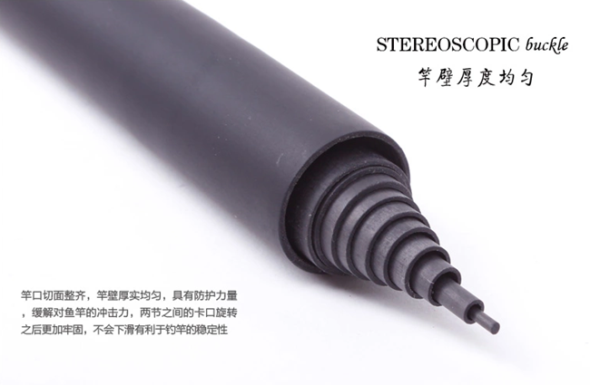

如何选择一款合适的鱼竿
来源：钓鱼123 作者：钓鱼郎 发表时间：2017-08-03
新手学钓鱼，首先接触的就是鱼竿，正所谓工欲善其事，必先利其器，要想钓好鱼，就要选择一款合适的鱼竿。如何选择一款合适的鱼竿呢？下面从鱼竿的材质、鱼竿的参数、以及自身的需求等几个方面做一下介绍。
台钓竿
溪流竿
一、鱼竿的材质
早期的鱼竿大多数是玻璃钢材质，但是玻璃钢材质的鱼竿弹性差，非常重，使用起来很不方便，现在很少有厂家生产玻璃钢的鱼竿了。目前大多数鱼竿都是碳素竿，碳素竿有低碳和高碳之分，含碳量越高，竿越轻、硬、挺。但是价格也高，还有一点你要知道，含碳量越高的杆，也越脆，使用不当的话，也容易断竿。
碳素纤维材质是加工鱼竿的核心材料——碳布，分为几个级别，30T以下，30—40T，40—60T，60—80T等等，T（吨）为碳纤维的指标。有些竿上标有“HVF” 指30T－40T的强度、高模量的碳素纤维布。SVF（VCF）T指40——60T的，TCF指60——80T的，T值越高，说明该材质的强度、弹性越高。以60T为例指的是单位面积内，不同含碳量的碳布所能承受的最大拉力60T就是一平方厘米的碳纤维布承受的静载拉力不小于60吨，吨位越高的碳布制作出的鱼竿承重能力越强，鱼竿含碳量指的是制作鱼竿所用碳布中碳纤维所含碳的比值，而不是整只鱼竿的含碳量，简单点说就是碳纤维的分布密度。
二、鱼竿的基本参数
(1)收缩长:一般分为竿收缩长(台钓竿收缩长一般1米到1.1米，溪流竿收缩长50~80cm)；
(2)节数(本),如四本为四节一般是3.6米长,又称12尺,五节(本)为4.5米长,又称15尺,六节(本)为5.4米长,又称尺18尺,一般最常用的就是这三种长度，当然还有6.3米、7.2米甚至更长的尺寸。
(3)先、元径，先径指竿尖粗细尺寸、元径指手把粗细尺寸。先径一般为1mm以下，元径（最粗的部份）和手把制作大小有关，总之，选竿在保证结实牢固的前提下要整体要尽量细；
调性:通常台钓竿又分为软竿、中硬钓竿，硬钓竿、超硬钓、战斗竿竿四种，俗称五五、四六、三七、二八、一九，台钓中最常用的是超硬钓（二八竿）。如何选取呢？我们把新竿抽出，一个人拿竿尖，另一人拿竿把，然后稍用力抬竿，查看竿主要弯折点位置，如果折点至竿尖长度是竿全长的十分之二，那么，这竿就是超硬钓，也即二八竿，如此类推。超硬钓竿的提竿反映速度明显快，中鱼率高，上鱼方便，好控鱼，不会因竿软而难提上岸来。但是在垂钓小型鱼类时很多钓友喜欢用软竿，软竿钓小鱼也会有很好的手感，钓起来也比较舒服。
受力均匀度:仿照起鱼受力抬竿动作，一人拿住竿尖，一人用力抬竿，查看竿弯曲弧度是否均匀，如竿尖到竿尾有明显成折点，那么，这竿就有问题，易折断。
基本参数：
1、全长（Length，即展开长度，单位为m或尺）。
2、继数（Section，即节数，单位为pcs）。
3、仕舞寸法（C.Lenghth，即收起来后鱼竿的长度，单位为厘米cm）。
4、先径（T.Dia，第一节竿稍顶部的直径，单位为毫米mm）。
5、元径（B.Dia，最后一节手把节顶部的直径，单位为毫米mm）。
6、重量（Weight，竿子的重量，单位为克g）。
7、碳素含量（Carbon，单位为百分比%，碳素含量一般是越高越好）。
三、根据自身的需求选择鱼竿
初学钓鱼选择鱼竿一定选择合适的，不要认为价格越高竿子越好，很多钓友刚学钓鱼时买的都是高碳鱼竿，但是用了没几次就断了，误认为是竿子的质量问题，这种看法其实是片面的，高碳的竿子硬、轻、挺，但是相对来说也比较脆，操作不当很容易断竿。新手学钓鱼算是刚入门，基本的垂钓手法还没掌握，遇到稍大点的鱼基本都是生拉硬拽，这样很容易断竿。
手竿一般分为溪流竿和台钓竿，溪流竿收缩后很短，台钓竿收缩后很长，如果平时外出垂钓考虑携带的方便性并且出钓的次数也不是很多，建议选择溪流竿，收缩后50CM左右，很容易携带。如果经常外出垂钓，并且所钓的对象鱼比较多样性，大鱼小鱼都有，这种情况下建议选择合适的台钓竿。一般在水库等大水域垂钓至少要配一支5.4米的手竿，如果经常在野塘、河流等小水域垂钓一般3.6米4.5米的手竿足以应对。
四、选择鱼竿注意事项
1、首先看看竿子的外漆面是否光滑，有无鼓起的气泡，或是漆面有杂质而留有的不平整的地方，可以用手感触一下。然后看看每节的竿口是否整齐，壁厚是否均匀。需要注意的是前后都要看。
2、把竿子一节一节全部拉出展开，然后轻轻抖动竿子，看看有没有异样的声音发出，如果有就说明在某一个接口部位有缝隙的存在，搭接不紧密。在查看是哪一节后，将其拉紧搭接紧密后，再次轻轻抖动，如果仍有这种现象出现，那么价格再低也不能买。因为这种竿子设计存在缺陷增大了你断竿折线跑鱼的机率。
3、把竿子后堵打开，看看竿壁是否均匀，如果竿壁明显的不均匀，说明竿子质量有问题，此种鱼竿在垂钓时容易断竿。
现在网络购物越来越方便，很多初学钓鱼爱好者基本都是通过网络的方式来购买鱼竿，但是这里面存着一个问题，网购鱼竿是看不到实际产品的，好在国家工商总局公布了网购的退换货政策，七天之内无理由退货。即便如此大家在购买的时候也要注意一些问题。一是百分之八十以上的商家存在虚假宣传，主要在鱼竿的含碳量方面，现在网上搜一下很多商家的竿子都标的是60T、80T、甚至有的标到108T，超过60T含碳量的杆子一般的中小型厂家达不到这种生产工艺，更重要的一个方面就是超过60T的碳布，很多中小型厂家是进不到原材料的。网上的竿子含碳量一般在24T~40T之间，价格一般在100~500之间，这算是一个合理的区间，也足以应对平时的垂钓活动，如果含碳量标的很高，价格又很低，那这款竿子肯定有问题。二是鱼竿宣传方式存在问题，现在商家能想到的宣传方法基本都用上了，拉汽车、挑矿泉水瓶、踩不断等等，广大钓友仔细想一下，竿子是用来钓鱼的，又有哪位钓友买来鱼竿会亲自测一下到底能不能踩断，能挑几瓶矿泉水呢？这些宣传方式都存在一定的误导性和夸大性。现在鱼竿的质量越做越好，从轻便性和结实耐用程度方面来说比早期的鱼竿有了一个很大的提升，因此大家在选择鱼竿的时候只要看竿子的涂漆、做工、以及调性和手感、钓重等各方面细节都没什么问题，这就是一款不错的鱼竿。